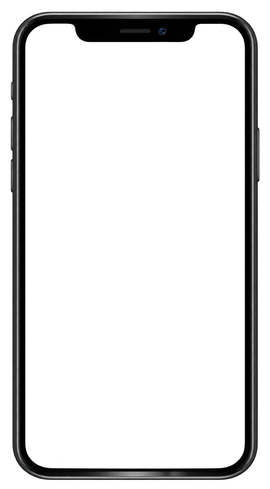

Angelica
Mitrovic Chikri
MULTIMEDIEDESIGNER

Kort om mig
Jeg er multimediedesignstuderende med passion for digitalt design, content creation og medieproduktion. Jeg har erfaring med Adobe Creative Cloud, Figma og udvikling af visuelt indhold til digitale platforme.
Jeg trives med både kreativ idéudvikling og praktisk eksekvering og søger mulighed for at udvikle mine kompetencer gennem en praktikplads inden for design eller medieproduktion.
Kulturhuset Brønden
2026I dette eksamensprojekt arbejdede jeg med Kulturhuset Brønden, som var en selvvalgt kunde. Projektet havde fokus på at udvikle og styrke deres digitale kommunikation på tværs af hjemmeside og sociale medier.
Jeg arbejdede blandt andet med udvikling af content til deres digitale platforme, hvor målet var at skabe et visuelt og sammenhængende udtryk, der kunne formidle husets arrangementer og aktiviteter til målgruppen.


SoMe Content
Jeg har stået for:
- Idéudvikling og contentplanlægning
- Udvikling af content (Figma)
- Tekst og formidling
- Målgruppeovervejelser
- Tilpasning til Instagram
Videoproduktion
Jeg har stået for:
- Idéudvikling og koncept
- Udvælgelse og sammensætning af klip
- Visuel formidling af events og stemning
- Videoredigering og motion graphics i Adobe After Effects

Hero video til hjemmeside
Young Creatives
Denmark
2026
I projektet arbejdede jeg med Young Creatives Denmark, som fungerer som bindeled mellem unge kreative talenter og reklamebranchen.
Mit fokus var at udvikle indhold til deres digitale platforme, der var relevant for deres målgruppe.
Jeg havde særligt fokus på Instagram-opslag og en hero video til deres hjemmeside.


SoMe Content
Jeg har stået for:
- Idéudvikling og koncept
- Visuel identitet og layout
- Tekst og formidling
- Målgruppeovervejelser
- Udvikling af content til Instagram (Figma)


Videoproduktion
Jeg har stået for:
- Idéudvikling og koncept
- Udvælgelse og sammensætning af klip
- Videoredigering og motion graphics i Adobe After Effects
- Tilpasning af video til flere formater (hjemmeside og sociale medier)
Hero video på hjemmeside

Instagram opslag/reel
Kontakt mig
Skal vi arbejde sammen?
Har du en praktikplads eller vil du høre mere om mig og mine projekter, er du meget velkommen til at kontakte mig.